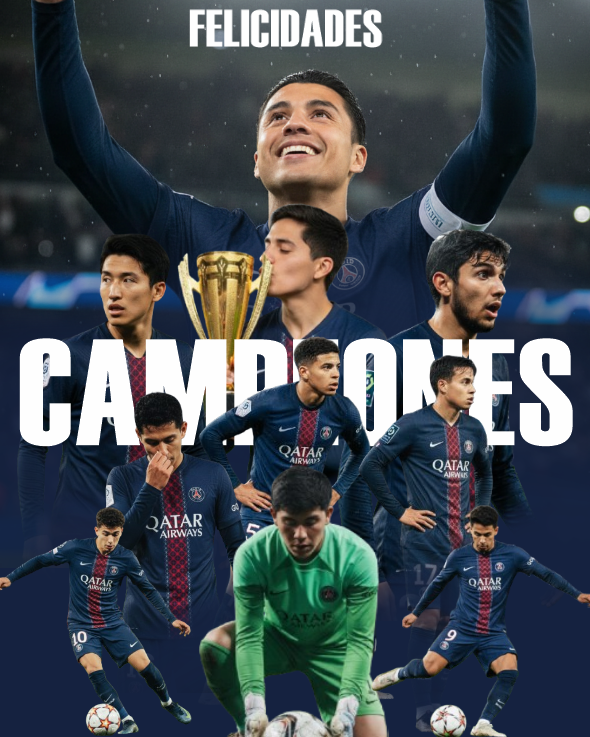
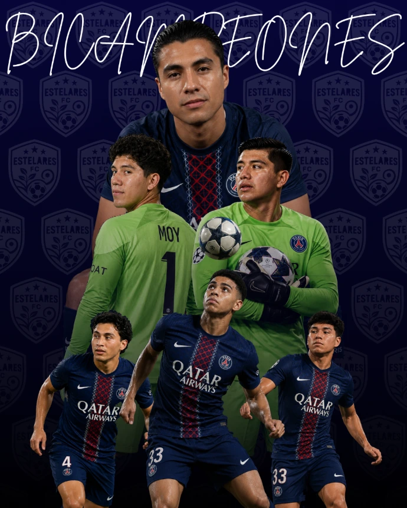

🏆 HISTÓRICO Y COMPETENCIA
Historial de Torneos
Sigue la evolución de la Ucaribe League. Revisa los campeones de las ediciones pasadas y prepárate para el torneo que está por comenzar.

Torneo Apertura 2025
🥇 1er Lugar: Estelares FC
🥈 2do Lugar: Milan
🥉 3er Lugar: Capuchas FC
📅 Inicio: 29 de Agosto 2025
🏁 Cierre: 21 de Noviembre 2025

Torneo Clausura 2026
🥇 1er Lugar: Estelares FC
🥈 2do Lugar: Atlético Temozón
🥉 3er Lugar: Capuchas FC
📅 Inicio: 19 de Enero 2026
🏁 Cierre: 14 de Mayo 2026
🔥 INSCRIPCIONES ABIERTAS
Inscribir Equipo
Torneo Apertura 2026
¡Prepara a tu escuadra! La nueva edición está lista para recibir a los mejores equipos de la universidad.
📅 Inicio: 04 de Septiembre 2026
🏁 Cierre: 04 de Diciembre 2026
Reglamento Oficial del Torneo
- No hay barridas, únicamente se puede barrer el portero dentro de su propia área.
- A las 6 faltas por equipo el árbitro sancionará un tiro penal.
- Todas las manos se contabilizarán, sean defensa o ataque (Dependerá el criterio del árbitro si es considerada como accidental).
- Todas las faltas son acumulables, se borrarán únicamente al finalizar cada tiempo (A excepción de las tarjetas).
- El tiempo de juego se prolongará únicamente en la ejecución de un tiro penal o tiro libre, concluyendo al momento en que el balón termina su movimiento hacia la portería sancionada.
- La sanción disciplinaria con tarjeta roja se sacará al jugador (No puede entrar otro a suplir su lugar en cancha).
- Las tarjetas no son de sanción por minutos.
- Las tarjetas son personales y no se borrarán (recordar que estas son por jugador) una doble amarilla es expulsión.
- Toda reanudación tendrá 5 segundos para poner el balón en juego.
- El partido podrá iniciarse con al menos 4 jugadores en cancha (Sin contar el portero).
- Se darán únicamente 10 minutos de prórroga para que el equipo se complete con el número mínimo de jugadores para iniciar el juego, el cronómetro empezará a correr a la hora programada para el partido, no se repondrá el tiempo de prórroga.
- No existe el fuera de lugar.
- No se permiten zapatos con tachones.
⚠️ REQUISITO OBLIGATORIO: El equipo tiene que ir uniformado mínimo del mismo color, con calcetas largas y espinilleras de forma obligatoria para poder jugar.